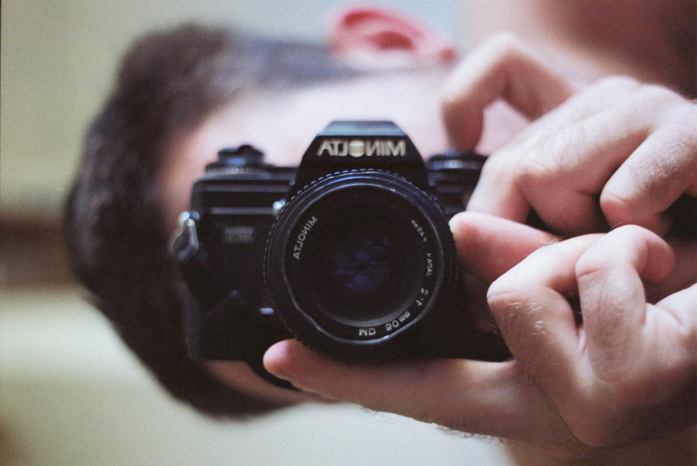

It all started when…
Alex is a skilled photographer with a captivating approach that transcends traditional boundaries.
With a passion for all areas of the craft, Alex's diverse portfolio is a testament to his exceptional skill, having worked with prestigious clients such as HBO, Irish Times, Phnom Penh Post, South East Asia Globe, and more.
Alex's journey in photography began in The Black Country, England, where he captured the beauty of abandoned factories, houses, and graffiti, published in prestigious outlets like Blowback magazine. It was here that Alex's love affair with the camera began, fueling an unquenchable desire to bring his unique perspective to the world.
Alex's signature approach involves building an emotional connection with his subjects, resulting in candid images that bring a fresh and engaging photojournalistic narrative to life. He thrives on the challenge of pushing boundaries and exceeding expectations, delivering truly original and captivating documentation. Alex's work captures the essence of the moment and tells a story through photography, evoking powerful emotions and leaving a lasting impression.
Alex has not only honed their art but has also expanded their creative horizons through photographic documentation and storytelling in all parts of Khmer society. His work in Cambodia is a testament to his ability to capture the essence of a place and its people, showcasing his versatility and range as a photographer. From the bustling streets of Phnom Penh to the serene mosques of Cambodia, Alex's lens has captured the beauty and complexity of the Khmer culture. A selection of his work can be seen here on this website, which features a stunning collection of images that tell a powerful and inspiring story of the people and places that have touched his heart.